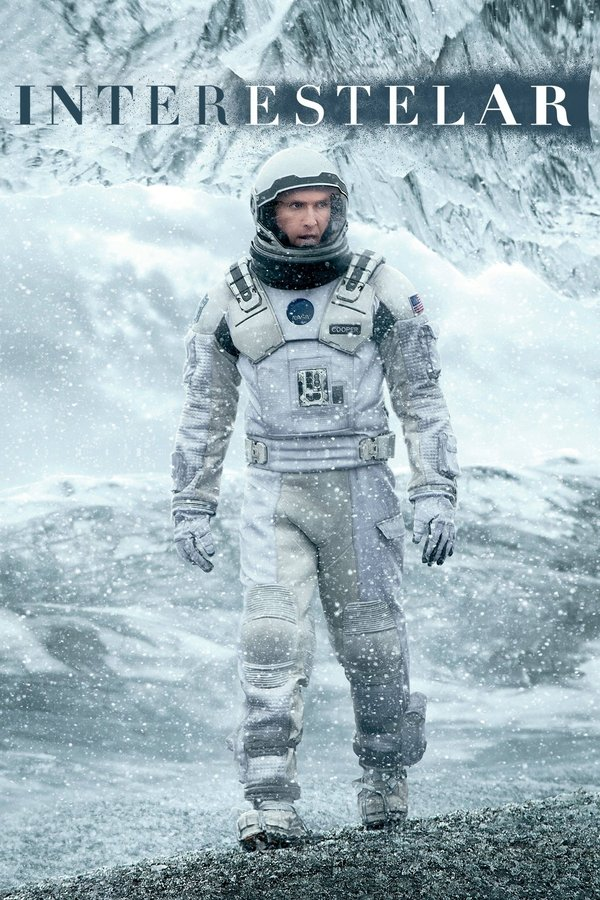

Interestelar
Em um futuro onde a Terra está se tornando inabitável, um grupo de astronautas parte em uma missão através de um buraco de minhoca em busca de um novo lar para a humanidade. Enquanto enfrentam os desafios do espaço e do tempo, Cooper, um ex-piloto da NASA, precisa lidar com a distância de sua filha e com decisões que podem salvar ou condenar a espécie humana.
- Duração: 2h 49min;
- Classificação: 10 anos
- Data de Lançamento: 6 de novembro de 2014;
- Direção: Christopher Nolan;
- Roteiro: Jonathan Nolan e Christopher Nolan;
- Orçamento: US$ 165 milhões;
- Bilheteria: US$ 773,8 milhões;
- Prêmios: Vencedor do Oscar de Melhores Efeitos Visuais e foi indicado em outras 4 categorias (Trilha Sonora, Direção de Arte, Som e Edição de Som).
Atores Principais
- Matthew McConaughey – Cooper;
- Anne Hathaway – Amelia Brand;
- Jessica Chastain – Murphy Cooper;
- Michael Caine – Professor Brand;
- Mackenzie Foy – Murph;
- Casey Affleck – Tom Cooper;
- Timothée Chalamet – Tom;
- David Gyasi – Romilly.